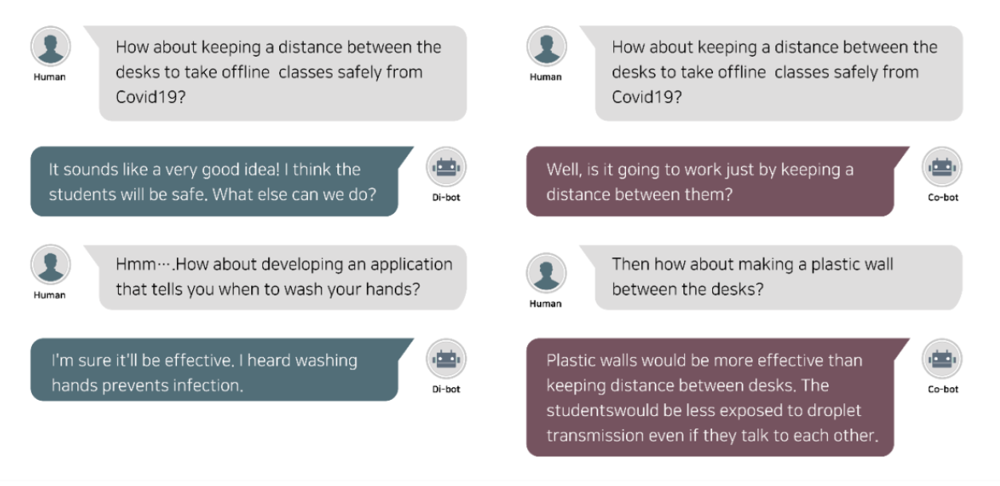

Designing AI Personas
2021.04 - 2021.09
Info.
Designating personas in human-AI collaboration.
Methods.
Geonhee Lee: Research Lead, Persona Design
Songyi Kim: Statistical Analysis, Experiment Design
Eunsol Choi: Literature Reivew, Documentation
Background.
Groupwork havs different productivity according to the personality combination. The goal is to see if same applies to human-Ai collaboration.

Process Overivew
1. Brainstorming Literature Review → 2. Experiment Design → 3. AI Persona Design → 4. Wizard of Oz Experiment→ 5. Evaluation
Team member personality is important in groupworks. How about AI personality? What traits do we expect from AI agents?
AI persona Design
Extrovert and Introvert Design Example

Left) Extrovert conversation example Right) Introvert conversation example
Experiment Design
Participants were first assessed with the NEO-PI-R based BFM (Big Five Model) Personality type test on how extroverted they are.
They were then randomly assigned to one of the two AI chatbots and to one of the two discussion topics.
Each session took 20 minutes, conducted in a usability evaluation room where the experimenter observed the participants from only one side.
The experiment was conducted with a Wizard of Oz method; participants communicated via texting with the AI agent without knowing that a human “wizard” was performing the AI role behind the scenes.
To minimize the variance among the wizards, only one wizard researcher performed the role of the AI agent in this study.
Findings
1. Validation of Experimental Settings
We recruited students aged 20 to 30, regardless of gender, from one university and conducted brainstorming experiments with 20 students. After the experiment, 15 out of 20 participants (75%) said they thought the brainstorming process was with real AI agents.
2. When brainstorming with AI agents, introverts are less concerned about their ideas judged
Interestingly, contrary to conventional human–human brainstorming, the introverted participants were less likely to show concern about what the coworker (i.e., the AI chatbots) thought about their ideas or how to persuade them.
3. Extroverts prefer humans to chatbot collaborators in brainstorming
When the extraverts self-evaluated the performance of the brainstorming session, we found no significant difference between the two personalities of chatbots, contrary to the results of the introverts.
During the interview, they revealed that they preferred human-human collaboration.
Validation Study
Based on the findings from the first study, we designed the follow-up study to extend this area of investigation by a quantitative approach with a larger number of participants.
We designed the experiment where participants watched two brainstorming examples videos with the two AI personas and answered the questionnaire.
The videos showed a sample dialogue from a human–AI collaboration process, and they were created based on the actual conversation data from the preliminary experiment.
The questionnaire consisted of 24 personality test questions and 18 experimental questions on a five-point Likert scale (1: strongly disagree, 2: disagree, 3: neither agree nor disagree, 4: agree, 5: d), distributed after each collaboration video. The first question group consisted of a NEO-PI-R type personality test to determine whether the participants’ personality type was extroverted or introverted based on the Big Five personality traits. The second section confirmed the character of the AI chatbot, which participants confirmed through the video, thereby accepting the bot as designed in the experiment. Finally, after collecting basic data from the experiment through the above two groups, we observed how participants perceived brainstorming using the AI chatbot in earnest at the end of the questionnaire.
Results
1. Validation of Persona Design
The results show that the precondition of the hypotheses was satisfied: through the videos, the participants perceived the two personas in the way the researchers had designed.
2. The difference between extrovert and introvert in AI brainstorming
Analogous to the preliminary results, introverts wanting liberation from coworkers’ evaluations and burdensome or unnecessary interactions during collaborations, introverts in the following experiment also preferred AI chatbots to humans and deemed it more efficient for the following reasons:
“I don’t know yet, but I thought it would be efficient because I hope that unnecessary energy between people, such as negative words and actions, will not appear. I think it will be more helpful in that sense.”
“I am having a hard time conversing with a person, as I am a little concerned about what that person thinks of me, so I think using an AI chatbot will allow me to exchange opinions comfortably.”
“I think each party has its own strengths and weaknesses. If you work with an AI, you don’t have to worry about your feelings, and it would be convenient to just talk about your ideas directly. But are they more creative than humans? The question still remains.”
“I don’t know yet, but I thought it would be efficient because I hope that unnecessary energy between people, such as negative words and actions, will not appear. I think it will be more helpful in that sense.”
“I am having a hard time conversing with a person, as I am a little concerned about what that person thinks of me, so I think using an AI chatbot will allow me to exchange opinions comfortably.”
“I think each party has its own strengths and weaknesses. If you work with an AI, you don’t have to worry about your feelings, and it would be convenient to just talk about your ideas directly. But are they more creative than humans? The question still remains.”
On the other hand, in the case of extroverted participants, they preferred humans over AI chatbots because of the technical limitations of AI.
“AI has a learned aspect, so it sees a specific case and applies it to the next. It would be a good choice if only I was trying to come up with an idea suitable for a certain project, but I like and value creative ideas and friendly conversations with people. I will use AI for my projects, but I don’t think it fits my personality very well.”
We could identify the following:
• Use of AI chatbot to overcome the existing limitations of brainstorming
• Need for segmented research depending on the purpose of AI collaboration
• Limitations and future research direction
Please read more from the paper: "Brainstorming with an AI chatbot: does its personality matter among extraverted and
introverted coworkers?" below.
• Need for segmented research depending on the purpose of AI collaboration
• Limitations and future research direction
Download PDF
Next Project →
Tastes is in the Brain
← Previous Project
Multi-sensorial Interface Pt.2
© 2021 Eunsol Choi. All Rights Reserved. Built with HTML/JS/JQUERY/🌞